Stamps는 계정 전체에 적용되는 데미지, 스킬링, 유틸리티 보너스를 최적화하는 방법을 안내하는 가이드입니다. 이 페이지에는 고양된(Exalted) 우표 우선순위 목록, 우표 극대화 팁, 그리고 주요 우표 보너스를 증폭시키는 방법이 포함되어 있습니다.
Stamps는 World 1의 핵심 업그레이드 메커니즘으로, 수집한 우표 수만큼 Wizard 데미지를 높이며, World 6의 Wind Walker를 획득한 후에는 고양(Exalt)하여 보너스를 두 배로 만들 수 있습니다. 모든 우표의 업그레이드 재료와 출처에 대한 자세한 정보는 Idleon 우표 위키 페이지를 참조하세요.
최고의 Stamps — Exalted 우선순위 목록
이 우표 티어 목록은 큰 보너스 또는 희귀한 계정 부스트를 제공하므로 획득, 업그레이드, 그리고 최종적으로 고양(Exalt) 우선순위를 정하는 데 활용하세요. Exalted 우표 업그레이드는 제한되어 있으므로 자신의 계정 진행 상황을 고려하면서 해당 우표에 접근할 때까지 저장해 두는 것이 좋습니다. 또한 미래 월드 출시를 위해 일부 Exalted 업그레이드를 남겨두는 것도 권장합니다.
| Stamp (등급) | 효과 | 재료 | 출처 | 비고 |
|---|---|---|---|---|
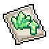 Crystallin (S) |
크리스탈 몬스터 등장 확률 | 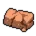 Boring Brick |
Papua Piggea (Tucked Away) 퀘스트가 활성화된 상태의 모든 크리스탈 몬스터 | 다른 출처가 거의 없으며, Active(직접 플레이) 크리스탈 파밍에 핵심적인 기여를 합니다. |
 Multitool (S) Multitool (S) |
스킬 효율 | 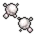 Dust Mote |
Poigu (Lampar Lake) | 모든 스킬 효율에 대한 대규모 부스트입니다. |
| Mason Jar (S) | 전체 소지 한도 | 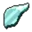 Glass Shard |
XxX_Cattleprod_XxX (The_Grandioso_Canyon) | 더 많은 아이템을 보유하여 새로운 최대 우표 레벨에 도달하거나 더 많은 황금 음식을 보관할 수 있습니다. |
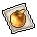 Golden Apple (A) |
황금 음식 효과 | 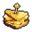 Golden Nomwich |
Mutton (Freefall Caverns) | 광범위한 유용성을 위해 모든 황금 음식을 강화합니다. |
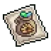 Matty Bag (A) |
재료 소지 한도 | 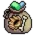 Cramped Material Pouch |
Faraway Piers 상점 | 새로운 최대 우표 레벨에 도달하는 데 도움이 됩니다. |
| Card (A) | 카드 드롭률 | Furled Flag | Level Up Gift 버블 | 특히 추가 카드 티어를 해금하고 후반 월드에 진입했을 때 희귀한 카드 드롭 사냥에 도움이 됩니다. |
| Vendor (A) | 상점 재고 수량 | Cue Tape | YumYum Grotto 상점 | 상점 용량의 독특한 출처로, 상점에서 추가 희귀 아이템을 구매할 수 있게 해줍니다. |
| Kruker (A) | 일일 Kattlekruk 버블 레벨 | 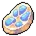 Equinox Flesh |
Shimmerfin Grove 상점 | World 5의 Kattlekruk Divinity에서 일일 연금술 레벨을 높여주지만, 초기 4레벨 이후에는 높은 비용 때문에 No Stamp Left Behind에 의존해야 합니다. 우표 레벨이 상당히 높을 때만(예: 30+ 레벨) 고양하세요. |
 Summoner Stone (B) Summoner Stone (B) |
소환 경험치 | Breezy Soul | Sussy Gene (Above the Clouds) | Star Sign 효과 스케일링을 돕습니다(레벨 240 상한). World 7에 소환 부하를 위한 전설 탤런트가 있다는 점도 고려하세요. |
| Drippy Drop (B) | 연금술 액체 재생 속도 | Pocket Sand | Sandy Pot, Mimic, Crabcake, Crystal Crabal, Effaunt 또는 Biggie Hours | 연금술 액체 생성을 증가시켜 연금술을 강화합니다. |
| Refinery (B) | 정제 사이클 가속 | 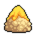 Cheesy Crumbs |
Magma Rivertown 상점 | 소금 정제는 장비 및 기타 업그레이드에서 흔한 계정 병목 지점입니다. |
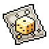 Golden Sixes (B) |
드롭률 | Kraken | Trash Island | 드롭률을 증가시킵니다. |
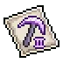 Cool Diggy Tool (C) |
기본 채광 효율 | 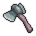 Iron Hatchet |
Snowman | 원자 생산을 위한 더 높은 프린팅 샘플을 위한 채광에 큰 부스트입니다. |
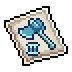 Swag Swingy Tool (C) |
기본 벌목 효율 | Copper Pickaxe | Thermister | 원자 생산을 위한 더 높은 프린팅 샘플을 위한 벌목에 큰 부스트입니다. |
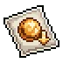 Gold Ball (C) |
황금 공 업그레이드 비용 감소 | Goldfish | Arcade | 다양한 독특한 아케이드 보너스를 강화하는 데 필요한 황금 공의 수를 줄입니다. |
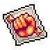 Maxo Slappo Stamp (C) |
STR + | 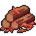 Maple Logs |
World 5 적(Suggma~Stiltmole), Scarab Nest, World 5 크리스탈 몬스터, Kattlekruk 보스 | 기본 STR은 Divine Knight의 골드 획득(Penny of Strength) 또는 Blood Berserker의 초록 버섯 파밍(Charred Skulls)을 강화합니다. |
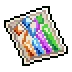 Stat Wallstreet Stamp (C) |
전체 스탯 + | Mystery Upgrade Stone II | Island Expeditions (Trash Island) | 위와 동일합니다. |
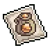 Lil' Mining Baggy (C) |
채광 소지 한도 | 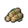 Jungle Logs |
XxX_Cattleprod_XxX (The_Grandioso_Canyon) | 새로운 최대 우표 레벨에 도달하는 데 도움이 됩니다. |
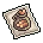 Choppin' Bag (C) |
벌목 소지 한도 | Carrot Cube | Hamish (Froggy Fields) | 새로운 최대 우표 레벨에 도달하는 데 도움이 됩니다. |
 Little Rock (D) Little Rock (D) |
동굴 탐사 효율 | 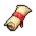 Chapter One (The Fear Within) |
Snootie (Seaweed Street) | 연금술과 함께 초기 동굴 탐사 효율의 중요한 출처입니다. |
 Ladle (D) Ladle (D) |
요리 효율 | Sand Shark | Oinkin (Donut Drive-In) | 더 많은 국자를 획득하여 초기 World 4 스킬 진행을 위한 요리 효율에 큰 부스트입니다. |
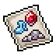 Cavern Resource (D) |
동굴 자원 증가 | 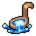 Cooking Ladle |
Ancient Golem | 동굴을 통해 초기 World 5 진행을 강화합니다. |
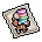 Study Hall (D) |
Bolaia 학습 속도 | Villager Statue | Ancient Golem | 동굴의 후반 진행을 강화합니다. |
 Divine (D) Divine (D) |
신성 경험치 | Orange Slice | Pirate Porkchop (Cracker Jack Lake) | 신성 경험치를 증가시켜 최대 탤런트 레벨을 위한 Arctis 신 효과를 개선합니다. |
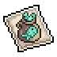 Bag O Heads (D) |
낚시 소지 한도 | 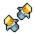 Butterfly |
Fly, Butterfly, Sentient Cereal, Fruitfly | 새로운 최대 우표 레벨에 도달하는 데 도움이 됩니다. |
| Bugsack (D) | 포획 소지 한도 | 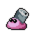 Hermit Can |
낚시 또는 Crystal Crabal | 새로운 최대 우표 레벨에 도달하는 데 도움이 됩니다. |
 Nest Eggs (D) Nest Eggs (D) |
육종 경험치 | Alien Hive Chunk | Oinkin (Donut Drive-In) | 이 World 4 스킬의 진행에 영향을 미치는 육종 경험치의 몇 안 되는 출처 중 하나입니다. |
 Potion (D) Potion (D) |
부스트 음식 효과 증가 | 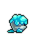 Icing Ironbite |
Papua Piggea (Tucked Away) | 부스트 음식으로부터의 스킬링 및 데미지 획득을 증가시킵니다. 단, Feasty Statue에 비해 작은 업그레이드입니다. |
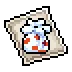 Corale (D) |
일일 산호 획득 | 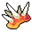 Demonflesh |
Bloo Radley (Pinpoint Summit) | 결합하면 World 7 부스트를 더 빠르게 해금할 수 있는 여러 유용한 산호 획득 부스트 중 하나입니다. |
우표 진행 최적화 팁
- 항상 우표 업그레이드하기: 우표는 World 1 메커니즘이며 개별적으로는 작은 보너스를 제공하는 것처럼 보이지만, 이후 진행에 우표 배율이 있고 총 우표 레벨이 다른 메커니즘에서 요소로 작용하므로 업그레이드하는 것이 중요합니다.
- Rift 우표 레벨 (Gilded Stamps): 총 우표 레벨은 World 4 Rift 26에서 매일 황금 우표(비용 95% 감소)를 얻을 확률에 영향을 줍니다. 10,000 총 우표 레벨은 하루에 하나를 보장하는 유용한 마일스톤이므로 모든 우표를 수집하고 약한 것도 업그레이드하세요.
- 우표 비용 감소: Hydrogen 보너스와 Gilded Stamps는 자동으로 적용되므로 재료 비용 감소가 필요하지 않은 우표에 낭비하지 마세요.
- 소지 한도 증가: 소지 한도와 골드가 더 높은 우표 레벨의 제한 요소입니다. 전체 인벤토리를 확장하는 것과 함께 이러한 한계를 극복하기 위한 영구적 및 일시적 소지 한도 증가가 있습니다.
- No Stamp Left Behind (NSLB): 이 메커니즘은 매일 로그인 시 해금된 우표 중 무작위로 하나를 선택하여 레벨을 올려줍니다. 운이 좋으면 소지 한도의 제한을 극복하고 다른 방법으로는 불가능한 우표 레벨에 도달할 수 있습니다.
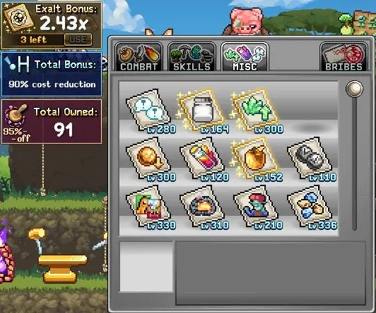
우표 비용 감소 출처
높은 우표 레벨에 도달하기 위한 재료 비용을 줄이는 출처들입니다.
| 업그레이드 | 효과 | 출처 |
|---|---|---|
| Blue Flav | 비용 감소 | 연금술(바이알) – Platinum Ore |
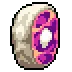 Venison Malt | 비용 감소 | 연금술(바이알) – Mongo Worm Slices |
| Envelope Pile | 비용 감소 | 연금술(시길) |
| Hydrogen Atom | 최대 90% 감소 | 원자 충돌기(World 3) - 수소 원자 레벨에 따라 매일 증가 |
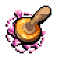 Gilded Stamps | 95% 감소 | Rift 26 보상(World 4) - 우표 레벨 100당 황금 우표를 얻을 확률 1%(10,000이면 100%) |
우표 소지 한도 출처
모든 인벤토리 가방을 해금하는 것 외에도 우표 레벨을 위한 인벤토리의 재료 보유량을 늘리는 데 사용하세요.
| 업그레이드 | 효과 | 출처 |
|---|---|---|
| Pouches | 특정 아이템 유형의 소지 한도 증가 | 모루(Anvil) |
| Stamps | 특정 아이템 유형의 소지 한도 증가 | 우표 |
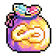 Carry Capacity | 모든 아이템의 소지 한도 증가 | Gem Shop |
| Chronus Star Signs (Pack Mule, The OG Skiller, Mr No Sleep) | 모든 아이템의 소지 한도 증가 | Star Sign |
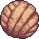 Ruck Sack | 모든 아이템의 소지 한도 증가(AFK 획득량 감소) | 기도(Prayers) |
| Pantheon Shrine | 모든 아이템의 소지 한도 증가 | 건설(Construction, 신전) |
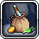 Extra Bags | 재료의 소지 한도 증가 | Journeyman 탤런트 |
우표 배율 출처
이 보너스들은 우표 컬렉션의 효과를 배로 늘려줍니다.
| 업그레이드 | 우표 배율 효과 | 출처 |
|---|---|---|
| Stamp Bonanza | 4배(검, 하트, 과녁, 방패 우표만) | The Upgrade Vault |
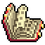 Certified Stamp Book Node | 2배(기타 우표만) | World 4 Laboratory |
| Liqorice Rolle | 1.25배 | World 6 Sneaking |
 Exalted Stamps Exalted Stamps | 2배 | 제한된 Gem Shop 또는 Wind Walker Compass 업그레이드 |
No Stamp Left Behind 출처
이 강력한 메커니즘은 플레이어가 로그인할 때마다 해금된 우표 중 하나를 무작위로 레벨업해 주며, 다음에서 획득할 수 있습니다.
| 업그레이드 | 효과 | 출처 |
|---|---|---|
| Sacred Methods Pack | 우표 레벨 +5 | Gem Shop 팩 |
 Stamp Stack Stamp Stack | 우표 레벨 +3 | 제한된 이벤트 상점 |